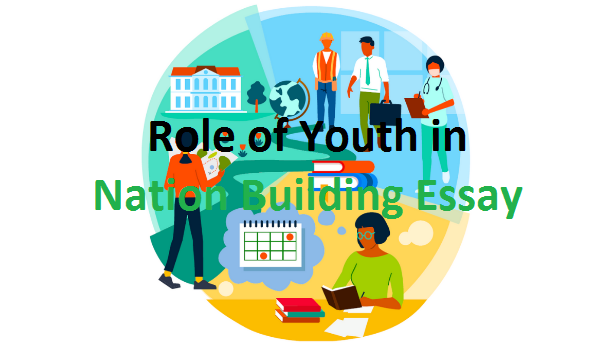

Role of Youth in Nation Building | 500+ Words Essay

The youth have always been considered the backbone of a nation, the bearers of its future, and the architects of its destiny. Their energy, enthusiasm, and innovative ideas have the potential to shape a nation's progress.
In this essay, we will delve into the pivotal role of youth in nation-building and discuss how their active participation in various spheres of society can lead to a brighter and more prosperous future. Understanding and harnessing the potential of youth is crucial for any nation's development, and it is a responsibility that both the youth and society at large share.
List of Top 500+ Words Essay For Students
Learn More: Click Here→
Role of Youth in Nation Building
Introduction
Nation building is like constructing a big puzzle, with each piece contributing to the final picture. Just like every puzzle piece matters, the role of youth in nation building is crucial. Youth, generally referring to individuals between the ages of 15 and 35, have the power to shape the future of a nation. They are the energetic and innovative force that can drive a country towards progress, development, and prosperity.
Youth represent the future of a nation, and their potential is boundless. They bring fresh ideas, enthusiasm, and a different perspective to the table. The energy and creativity that young people possess can be harnessed to solve some of the most pressing issues facing a country.
How To Start Freelancing as a Beginner?
Learn More: Click Here→
Importance of Youth in Nation Building
Youth play a pivotal role in the development and progress of a nation for several reasons. First and foremost, they are the torchbearers of innovation. Young minds are not bound by conventional thinking, which makes them more open to exploring new solutions and ideas. This innovative spirit can lead to breakthroughs in technology, science, and various other fields, ultimately driving the nation forward.
Furthermore, youth bring a unique energy and dynamism to the table. Their enthusiasm is contagious, and their willingness to work hard and pursue their goals can inspire others around them. This drive is essential for tackling the challenges that a nation may face, whether it be in the realms of education, healthcare, or economic development.
In addition, the youth are often the most connected generation. In an age of technology and information, they have the power to mobilize quickly and efficiently. This connectivity can be harnessed for social and political change, allowing youth to advocate for policies and practices that benefit society as a whole.
In the grand tapestry of nation building, every thread matters. The youth represent one of the most vibrant and dynamic threads in this tapestry. Their contributions, both big and small, collectively shape the fabric of a nation's progress. Each effort to uplift their communities, advocate for change, protect the environment, and participate in governance is a step towards a stronger, more resilient, and more prosperous nation.
How To Earn Money Online For Students?
Learn More: Click Here→
Responsibilities of Youth in Nation Building
While the potential of youth is undeniable, it is equally important for them to understand their responsibilities in the process of nation building. One of their primary responsibilities is to invest in their education and personal development. By acquiring knowledge and skills, they can contribute more effectively to their nation's growth.
Youth should also actively engage in their communities. Volunteering and participating in local initiatives not only help address pressing issues but also foster a sense of social responsibility. By being aware of and addressing the needs of their communities, young individuals can make a tangible impact on people's lives. Moreover, youth must promote diversity and tolerance. In a diverse nation, understanding and respecting different cultures, religions, and backgrounds are essential for maintaining harmony. Young people can play a significant role in promoting unity and inclusivity.
It's important to recognize that youth engagement is not a one-size-fits-all concept. While some may excel in entrepreneurial ventures, others may find their calling in grassroots activism or scientific research. The diversity of talents and interests within the youth demographic is a valuable resource in itself. Encouraging young people to pursue their passions and interests, no matter the field, contributes to the holistic development of a nation.
Conclusion
In conclusion, the role of youth in nation building is multifaceted and deeply significant. They are not merely passive recipients of a nation's legacy; rather, they are active participants in shaping its future. Youth embody the spirit of progress and innovation, possessing the vitality and fearlessness to challenge the status quo. They stand at the crossroads of tradition and modernity, holding the power to navigate a nation towards a brighter and more promising tomorrow.
In closing, the role of youth in nation building is not a passive one. It is a dynamic and active endeavor that requires commitment, dedication, and a sense of responsibility. As young individuals embrace their roles as architects of their nation's future, they carry with them the dreams, hopes, and aspirations of their people. Together, they can create a mosaic of progress and prosperity, where every piece, no matter how small, contributes to the beautiful picture of a strong and vibrant nation.
How To Host A Website For FREE On Github?
Learn More: Click Here→